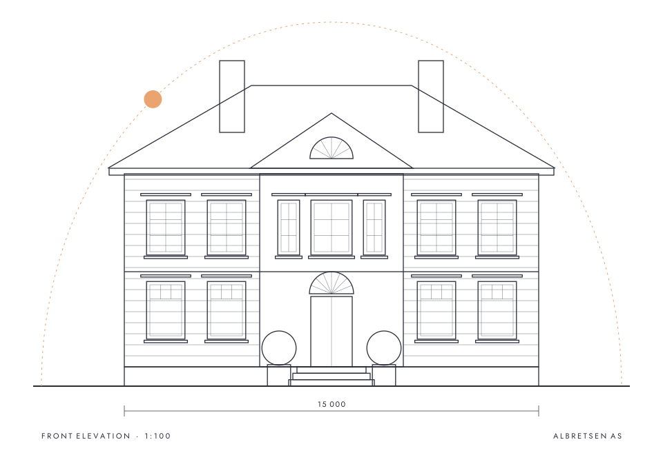
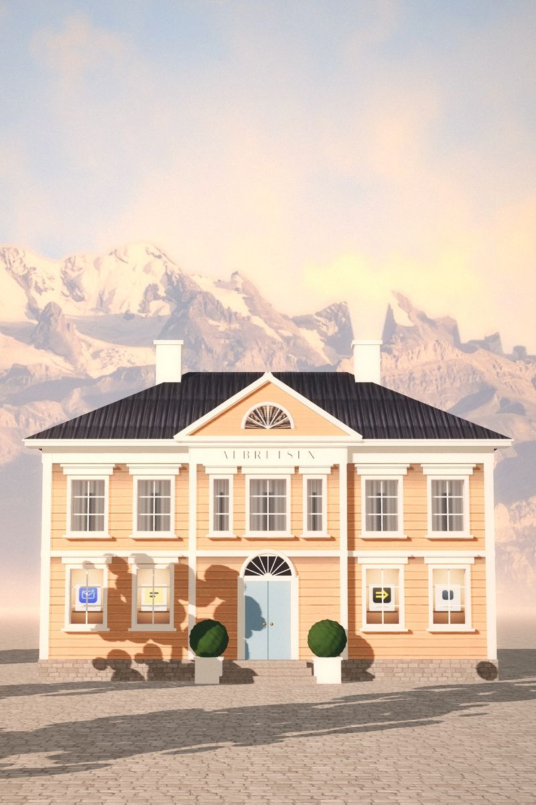
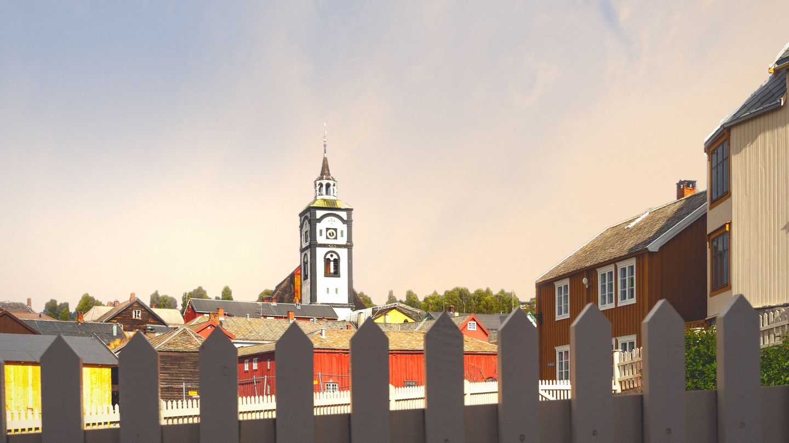
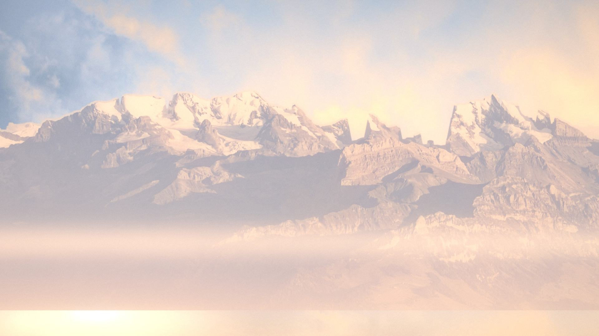
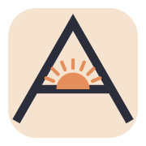
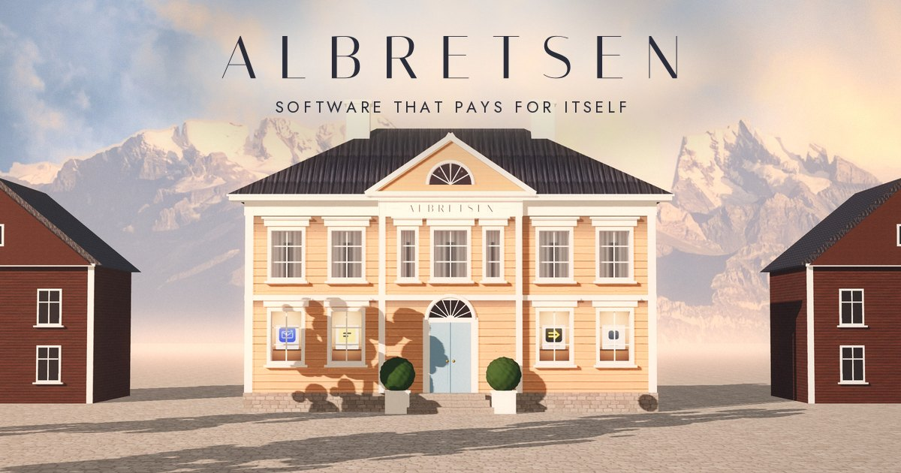
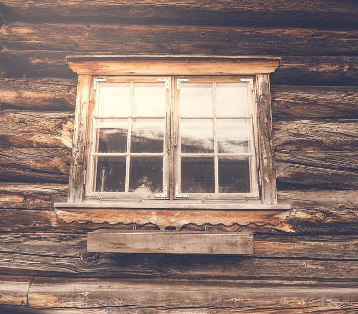
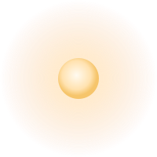

Morning Elevation
A Norwegian small town at seven, drawn like an architect's front elevation. One perfectly symmetrical wooden house, painted the colour of first light. Its ground-floor windows are lit, and in each one stands a product. The company is the building, so nothing about it needs to shout. Only the sun moves.

extras/elevation-drawing.svg: the same dimensions as the 3D model (15 m facade, 1:100). Use it for the about section or as a quiet blog header.Matte paintings
Each one combines real photographs (sky and mountains from Wikimedia Commons, CC0) with a three.js house dressed in CC0 photo textures. Every image ships as AVIF, WebP and JPEG at several widths.





The pediment A
An A drawn as a classical pediment. Its crossbar is the horizon, and a half sun rises under the apex. It works as a capital letter, a gable and a sunrise.

identity/mark.svg
identity/mark-light.svg
favicon.svg + favicon-180.pngidentity/wordmark.svg: mark, Italiana with wide Deco tracking, and AS in Jost. Glyphs are outlined, so no font is needed.identity/wordmark-type.svg: name only, filled with currentColor when inlined. Use it for hero settings.
identity/og-1200x630.jpgSunrise on wood
Peach, gold and pale blue carry the light. Linseed and ink carry the type. Falu red is for the neighbours only, so use it sparingly.
oklch(96.0% 0.016 82.8)
oklch(82.8% 0.086 57.6)
oklch(84.9% 0.122 81.1)
oklch(72.6% 0.124 50.0)
oklch(84.4% 0.037 245.7)
oklch(77.6% 0.043 242.8)
oklch(68.2% 0.050 243.7)
oklch(91.4% 0.006 239.8)
oklch(45.0% 0.126 30.7)
oklch(43.5% 0.062 142.2)
oklch(30.1% 0.024 278.0)
Deco and quiet
Italiana (display, OFL) set in capitals with 0.3em tracking. Jost (text, OFL, variable 100–900) is a geometric face of the same era that stays out of the way. Poiret One appears only as an occasional accent.
MCP Emails gives AI agents an inbox: 17 tools and about 100 email providers. Fun Libs has reached 113,000+ installs with no marketing, and v5 shipped in 2026. Asgeir has published on Google Play since 2016.
Lit windows
Each live product stands in its own shop window, with its real logo on a card, rendered from the same 3D house. Retired products are windows with the shutters closed, a dignified kind of "closed".


Texture and detail
Small things that make the pages feel inhabited: painted boards, linen grain, a morning shadow, a real cabin window, an enamel plaque and a fanlight rule.
clapboard-peach-512.jpg (seamless) under leaf-shadow-1600.png (multiply). The shadow drifts with --me-t.
cabin-window: a real photograph by Steinar Engeland (CC0), graded into the palette.
plaque-since-2016.svg: an enamel house plaque.
fanlight-divider.svg: a section rule taken from the door's fanlight.clapboard-falu-512.jpg and linen-grain-256.png (alpha, tileable)
sun.svg: the sun disc, the one moving thing.Only the sun moves
One variable, --me-t, holds the time of day. Scroll sets it on a site; here you drag it. Everything below reads it. See motion.css / motion.js.
1 · Sun arc: the sky gradient and the disc follow an elliptical arc.
2 · Shadows swing and lengthen with the sun

3 · Shutter open (on view) ·

5 · Lamplight: drag toward dusk
4 · Deco settle: the cover wordmark ·
The house, live
3d/facade.js builds the house in three.js from primitives (r170 from a pinned CDN, loaded lazily). setSun(t) moves the light, and shadows, windows and colour follow. audio/ambient.js adds an opt-in synthesised soundscape of wind, a far sea and a town square at seven, with no audio files.
Inventory
The full inventory, with sources and licences, is in ASSETS.md.
| img/ | hero-facade-dawn(-tall), hero-facade-dusk, hero-town-morning, backdrop-sky-mountains, sky-dawn-2400 |
| identity/ | mark, mark-light, wordmark, wordmark-type, favicon (svg + 180 png), og-1200x630 |
| products/ | window-* (4 live), retired/shutters-* (7), logos/ (real, unchanged) |
| extras/ | elevation-drawing, fanlight-divider, plaque-since-2016, sun, clapboard-peach/falu, linen-grain, leaf-shadow, cabin-window |
| 3d/ | facade.js, demo.html, bake.html, tex/ (CC0 ambientCG) |
| audio/ | ambient.js |
| motion.css · motion.js | Sun arc, light rake, shutter open, deco settle, lamplight |